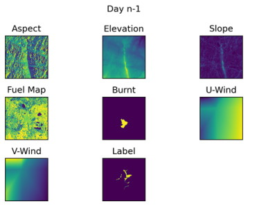

About
I use this package to automate the acquisition and processing of spatial data relevant to wildfire. FiTriMap prepares data for input into FiTriNet (a work-in-progress wildfire spread prediction machine learning model)
FiTriMap:
- Accepts a wildfire shapefile or raster input, expected from datasets such as ABoVE Wildfires or Canadian National Fire Database
- Extracts and processes key environmental data within the wildfire perimeter, including fuel data, topography, and weather (via WeatherFetch)
- Performs post-processing, including indice calculation (slope and aspect from topography, initial spread index from fuels), reprojection to a common coordinate system, resizing to a uniform pixel size, normalization, fire statistics calculation, and dataset CSV creation

Project Link
https://github.com/24spiders/FiTriMap